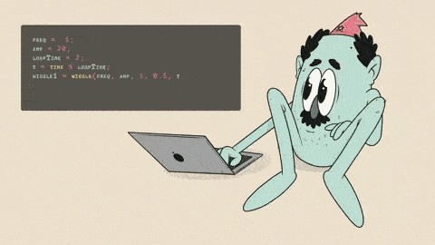

Это было самое начало пути. На этом этапе важно было проникнуться основами и настроиться на учёбу. И, возможно, подумать, как новые знания могут повлиять на ваше будущее.
В самом начале теория для меня была не сложной, так как я ранее увлекался версткой. Покупал несколько платных курсов и смотрел видеоролики на YouTube.
На этом этапе я вспомнил, то что уже знал и был готов к дальнейшему обучению.
1 спринт: Я — чистый лист
<clean sheet>
На первых этапах мы работали со страхами и сомнениями, которые часто испытывают новички. Один из них — страх перед чистым листом. Это, конечно же, намного сложнее, чем боязнь куска бумаги. Часто за этим ощущением скрываются более глубокие вопросы: с чего начать? а вдруг будет слишком сложно? что, если я не справлюсь?
Я сделал свой выбор осознанно и страха не испытывал. Мне казалось, что первую работу я сдам без проблем.
Но у ревьюера было другое мнение))) Мне пришлось переделывать целую секцию, время поджимало, а сделать все правильно так и не получалось. Ответ лежал на поверхности, но без помощи наставника я его так и не нашел.
1 спринт: А если не получится?
<set goals>
Первый проект — позади! Но это всё ещё самое начало пути. Радость могла быстро померкнуть и смениться ожиданием провала. Или вы, наоборот, могли вдохновиться успехами и поверить в себя.
Четко поставленная цель помогала мне поверить в себя.
Я был очень рад когда получил зачет по первой проектной работе и первым делом поделился об этом с самыми близкими, а также в чате нашей когорты.
2 спринт: Погоня за идеалом
<desigions>
На этом этапе вы уже достаточно разбирались в основах вёрстки, чтобы понять, как много ещё впереди. Вы могли попытаться погнаться за идеалом и понять, что он недостижим. А, может, вы вовсе и не подвержены перфекционизму и вместо того, чтобы сделать идеально, старались просто сделать.
Во второй проектной работе меня ждали новые трудности, которые приходилось решать путем повторения теории и поиска дополнительной информации.
Самое сложное было заставить чекбоксы работать как следует в состоянии :focus-visible. В результате мне пришлось забыть на время о перфекционизме и просто сделать то, что требуется для получения зачета.
2 спринт: О тех, кто рядом
<team support>
Всё это время вы были не одиноки (хотя, возможно, иногда и чувствовали, что одни против целого мира). Вас окружали одногруппники, команда сопровождения и просто близкие люди, которым можно пожаловаться, если очередной макет просто так не поддавался. Осваивать что-то новое легче, когда рядом есть единомышленники, не правда ли?
В первую очередь я благодарен своим близким за поддержку, а также наставнику, куратору и однокурсникам.
В этом вся прелесть системного обучения, когда есть к кому обратиться за помощью.
3 спринт: Обходные стратегии
<workarounds>
На этом курсе вы постоянно решали разные задачи. В какой-то момент вам могло показаться, что решения просто иссякли. Значит, пришло время посмотреть на задачу под другим углом.
В третьей проектной работе меня снова ждали "неприятости". Тут я впервые столкнулся с написанием темной темы, кроме того у макета были свои особенности требующие дополнительной проработки разметки и дополнительных классов.
Я постарался довести проект до такой степени готовности, при которой он пройдет автотесты, чтобы отправить его на первое ревью. Замечания ревьюера мне очень помогли сделать проект лучше и получить зачет.
3 спринт: Когда опускаются руки
<need rest>
Во время учёбы часто возникает чувство, когда не знаешь, за что хвататься. Вроде и проектную пора сдавать, и задачи хочется порешать, и в теории получше разобраться, и жизнь не забыть пожить. В такие моменты очень нужна концентрация. Вспомните, откуда вы её черпали.
Сложно было ежедневно выделять время (работа, семья, быт... а еще в 2024 году я решил попробовать себя в качестве селлера на маркетплейсах и на это тоже уходит очень много времени), но мотивации у меня хоть отбавляй.
Последнее время я каждый день мечтаю сменить свою работу и переехать в Краснодар.
«Сейчас я здесь»
<new year>

Сейчас вы уже очень много знаете о вёрстке. Но это только начало. Во-первых, впереди ещё много материала про «красотищу». Во-вторых, с окончанием курса учёба не заканчивается. Вёрстка — это целый мир. И этот мир постоянно меняется. Познать его полностью не получится, но это тот случай, когда важен сам процесс познания. Ведь часто путь — и есть результат.
С нетерпением жду новый спринт по JavaScript, ведь только там начинается настоящая магия.
Пользуясь случаем поздравляю всех одногруппников, а также всю команду Яндекс Практикума (наставники, кураторы, ревьюеры и т.д.) с наступающим новым 2025 годом!!!